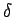

Inhalt Index DeskTop Bronstein

 Integraltransformationen Laplace-Transformation Eigenschaften der Laplace-Transformation Diracsche Delta-Funktion und Distributionen
Integraltransformationen Laplace-Transformation Eigenschaften der Laplace-Transformation Diracsche Delta-Funktion und Distributionen


Wichtige Eigenschaften der -Funktion im Hinblick auf ihre Anwendung sind:
| (15.35) |
| (15.36) |
| (15.37) |
d.h., die Nullstellen von g(x) müssen einfach sein. Dabei sind sämtliche Nullstellen von g(x) zu berücksichtigen.
| (15.38a) |
eine Vorschrift für die n-te Ableitung der -Funktion:
| (15.38b) |